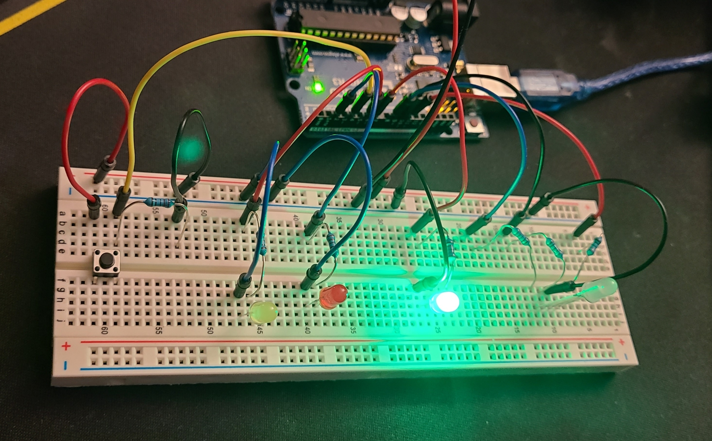
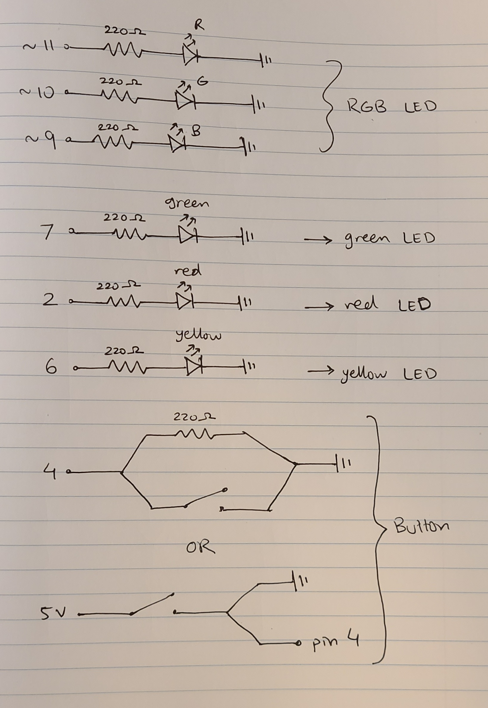
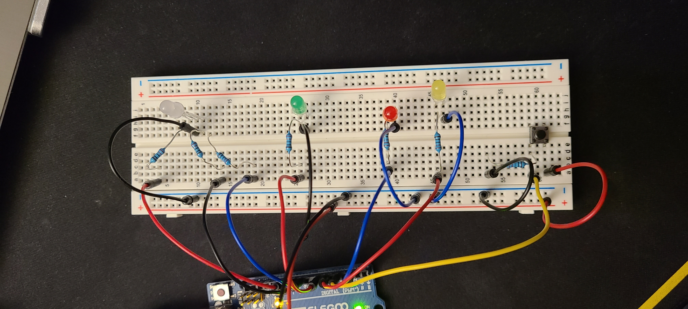
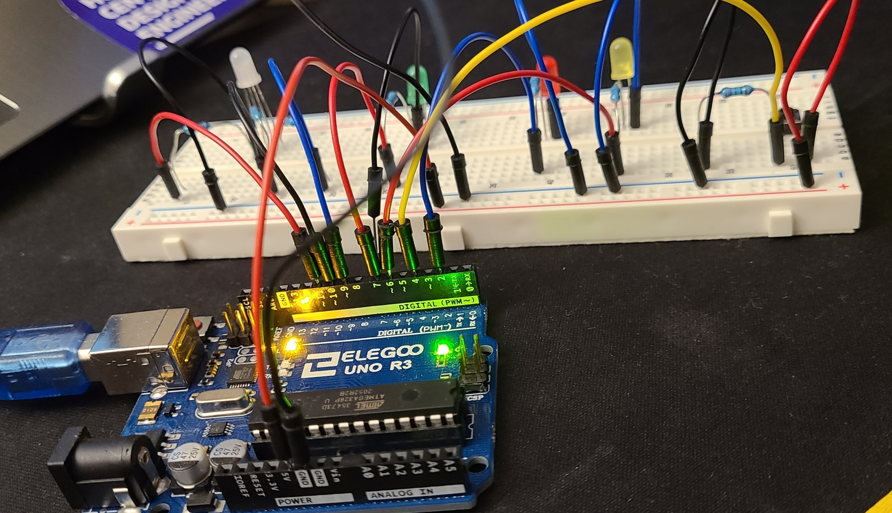
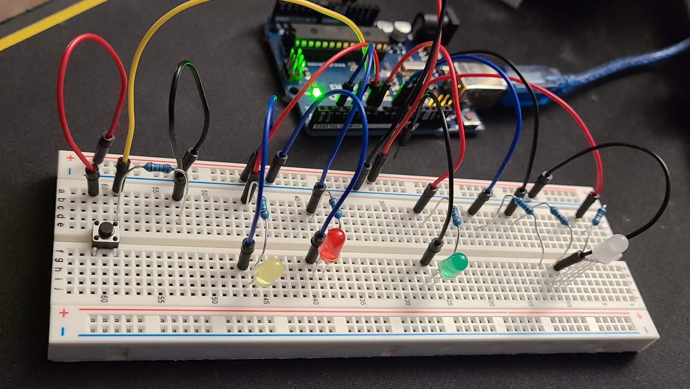

GIF

Enjoy this gif I made!

Here is all the documentation for assignment 3!

This is a schematic diagram of the circuit I built and shows the 3 LEDs connected to the 3 different pins with a resistor of 220 ohms and a current output of 5V at the pins. The button has its own schematic towards the bottom and the RGB LED has its own schematic at the top of the image.
  
Here are some photos of the breadboard circuit where you can see all the
connections from different angles.
Here are some calculations to figure out the resistance needed. Since it was
either 250 or 160 ohms,
I decided to use the 220 ohm resistor for all since I didn't need them to be a specific brightness.
Here is the Arduino code I wrote and used for this button/fade pattern:
Enjoy this gif I made!